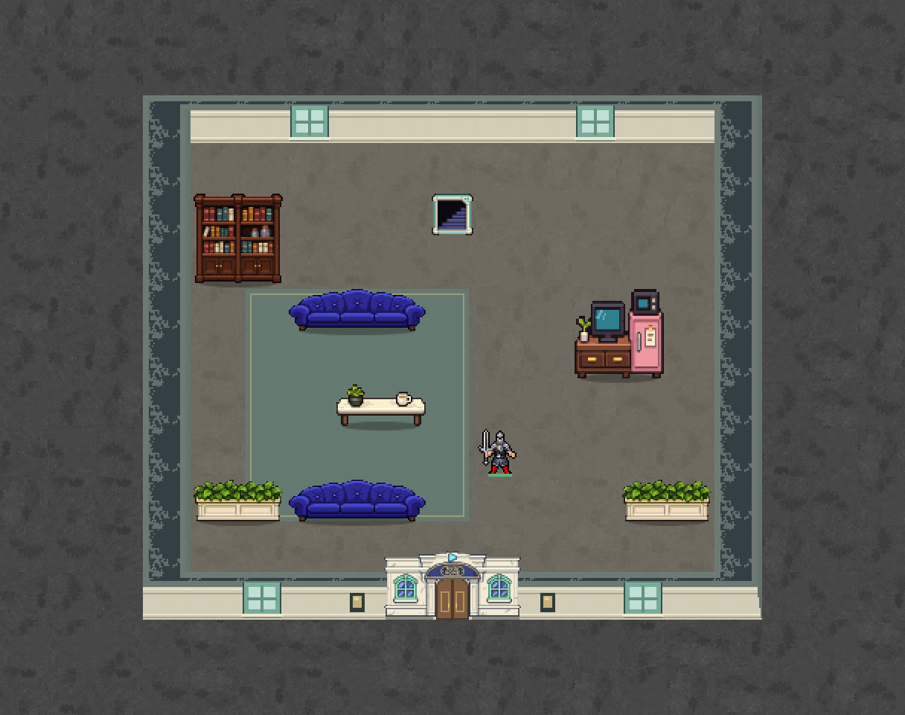
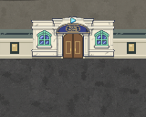
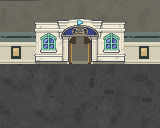

홀로홈 · 최종 확인
1층마다 1곳 · 13×11칸 · 안쪽 전용 내려가는 계단 1개. 기존 아치 입구와 상아색 외벽, 파란 소파·작은 테이블·책장·작아진 TV 구성을 유지했습니다.
입구 열기·통행, 계단까지 이동, 2층에서 새로고침, 같은 계단으로 돌아오기 확인. 24시드×2층 연결·계단 배치 검사 통과.

입구 닫힘
입구 열림
최신 맵에서 직접 걷기 · 전체 1층 · 확인 기록
다음 건물: 프로미스 타워 구조 초안 →
브라우저 확인본입니다. 실제 게임 엔진 적용은 후속 작업입니다.